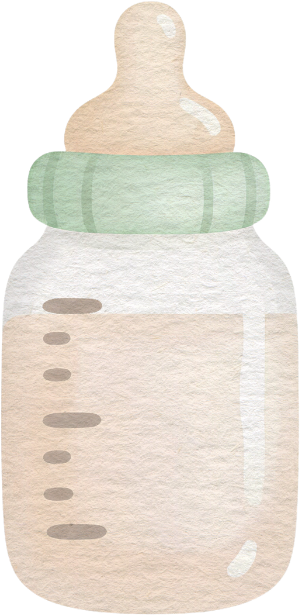
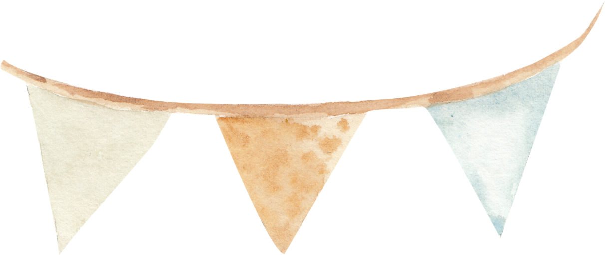
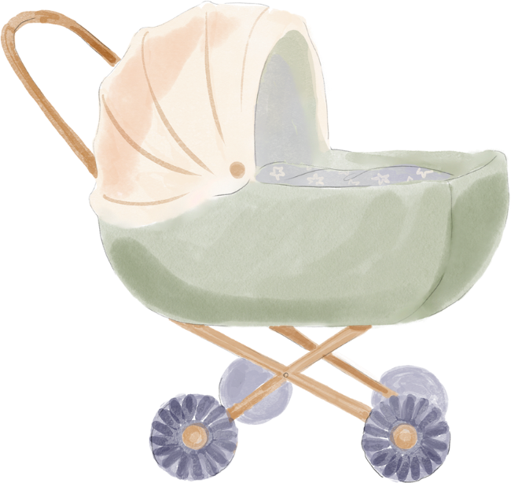
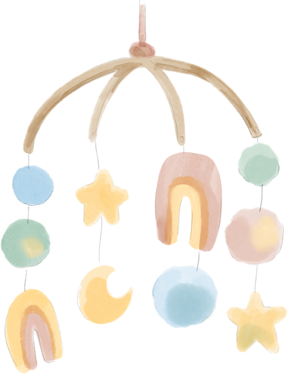
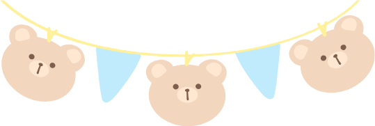
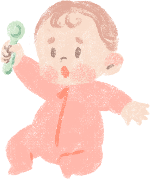

整合政府補助、醫療資源、教育資源，讓每一步育兒路更安心
本平台整合衛福部、教育部、勞動部等政府單位育兒資訊，搭配 AI 小幫手即時解答您的育兒問題。


兒童健康、預防保健、醫療資源整合

政府育兒補助申辦攻略、資格與金額整理
幼兒教育、托育、親子活動資源整合
台北市政府社會局於全市 12 行政區設置 27 家親子館，提供 0–6 歲兒童免費入場、玩具借用、親職講座等服務。部分活動需事先網路報名，額滿為止。
加入 LINE 官方帳號後，可以設定寶寶資料，系統會主動推播疫苗接種、補助申辦提醒！
LINE Bot 功能：疫苗提醒 · 補助到期通知 · 育兒問答 · 設定寶寶資料
說明文字
在首頁搜尋框輸入關鍵字（如「育兒津貼」、「疫苗」），AI 小幫手會從政府知識庫中找到最相關的資訊。
右下角或側邊欄的聊天機器人可以回答任何育兒問題，並附上政府文件來源，不會亂猜。
加入 LINE Bot，設定寶寶出生日期後，系統會自動計算疫苗時程、補助截止日，到期前主動通知您。
點選上方「社群論壇」，與其他新手爸媽分享申辦心得、交流育兒經驗。登入後可以發文留言。
點選「親子活動場館」或「托嬰中心查詢」卡片，可查看台北市 27 家親子館位置及公托申請資訊。